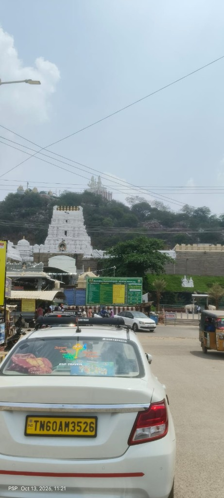

Theni local and hourly
Allinagaram, the bus stand, the railway station, hospitals and functions. Say how many hours you need the car.
Isai Cabs & Travels
The car is on the way
Allinagaram, the bus stand, the railway station, hospitals and functions. Say how many hours you need the car.
About 15 km · around 30 minutes. Also the doorway to Kodaikanal. Periyakulam taxi page.
About 16 km · around 30 minutes. Door pickup in Bodi when the car is free.
About 40 km · around 1 hour. Useful toward the Kerala side of the district.
About 75 km · around 1 hour 30 minutes. Drop at the foot of the Murugan temple hill.
About 75–80 km · around 2 hours. City drops and Madurai airport on the same road. Add time if you have a flight.
About 85 km · around 2 hours 20 minutes via Periyakulam, longer when the ghat is slow. Day hire with waiting can be quoted.
About 100 km · around 3 to 3.5 hours by the Bodimettu ghat. Say if you want photo stops.
About 211 km · around 5 hours, usually by Palani and Udumalpet. Airport and railway drops. Coimbatore page.
About 504 km · plan close to 10 hours with breaks. One way, or two days with a night halt. Chennai page.
What the quote uses
Pickup and drop, date and time, one way or round trip, passengers, bags, and any waiting. A night halt, an airport buffer, or a full day in Kodaikanal changes the amount. The reply on 86818 32335 is the fare that counts.
The car seats four passengers besides the driver. If the roof carrier is needed, say so before the trip so the straps are ready. Other towns in Tamil Nadu can be quoted the same way if the date is open.
